CODING AGENTS AS PIXEL WORLD MODELS
traex/GPT-6.1-Sol · 0013
点击播放 · 原生 RGB 像素
此结果可播放，但该运行尚未通过最终提交审核。页面展示不代表评测通过。
逐轮保存的候选
回放视频、检查图与代码变化。
每份候选均可单独播放。实际图片检查记录在下方工具轨迹中。
候选 01播放与检查图
点击播放 · 原生 RGB 像素

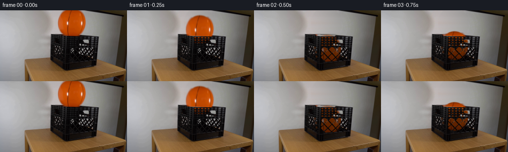
展开代码变化
--- 上一保存版本
+++ 本次保存版本
@@ -0,0 +1,190 @@
+from pathlib import Path
+import numpy as np
+from PIL import Image, ImageDraw, ImageFilter
+import cv2
+from scipy.ndimage import gaussian_filter
+import artifact_io
+
+ROOT=Path(__file__).resolve().parent
+S=4
+H,W=144,256
+original=np.array(Image.open(ROOT/'first_frame.png').convert('RGB'))
+rng=np.random.default_rng(31)
+y,x=np.mgrid[0:H,0:W].astype(float)
+
+# Recover the small region of the screen that is behind the ball. Its
+# illumination is interpolated from the screen on either side, not inpainted
+# from the dark rim below it.
+wall=original.astype(float).copy()
+for yy in range(53):
+ a=original[yy,110:117].mean(axis=0).astype(float)
+ b=original[yy,175:182].mean(axis=0).astype(float)
+ if yy==0: b=np.array([159.,157.,155.])
+ elif yy==1: b=np.array([158.,156.,154.])
+ for xx in range(115,175):
+ u=(xx-113)/65
+ wall[yy,xx]=a*(1-u)+b*u + np.sin(u*np.pi)*1.5
+ wall[yy,xx]+=rng.normal(0,.45,3)
+
+# Soft matte derived directly from the orange object and the neutral screen.
+CX,CY,RX,RY=144.5,25.1,27.75,28.65
+ell=((x-CX)/RX)**2+((y-CY)/RY)**2
+alpha=np.clip((wall[:,:,2]-original[:,:,2])/np.maximum(wall[:,:,2],1),0,1)
+alpha*= (ell<1.22)&(y<52.3)&(x>113)&(x<176)
+alpha=np.where((ell<.78)&(y<49),1,alpha)
+# Remove the faint orange antialiasing on the leading edge.
+bg=original.astype(float).copy()
+region=(ell<1.25)&(y<48.0)
+bg[region]=wall[region]
+
+# The back/top rim only loses a short, previously hidden stretch. Continue
+# its regular moulded ribs through that stretch.
+for yy in range(48,53):
+ for xx in range(124,166):
+ line=48.0+(xx-102)*.046
+ if yy<line-.45:
+ bg[yy,xx]=wall[yy,xx]
+ else:
+ # source intact adjacent rim, following the periodic vertical ribs
+ sx=xx+35
+ sy=int(round(yy-35*.046))
+ sx=min(sx,195);sy=max(48,sy)
+ bg[yy,xx]=original[sy,sx]
+
+# Unpremultiply the original photographed surface. It retains the two long
+# curved dark seams, orange highlights, and the real inflatable texture.
+sprite=np.zeros((64,64,4),float)
+for sy in range(64):
+ yy=sy-5
+ for sx in range(64):
+ xx=sx+113
+ q=((xx-CX)/RX)**2+((yy-CY)/RY)**2
+ aa=np.clip((1.012-np.sqrt(q))*RX/1.1+.5,0,1)
+ if yy>=0 and yy<52 and 0<=xx<W:
+ aa=alpha[yy,xx]
+ if aa>.01:
+ # Background differs on the final three rows, where the
+ # crate's top edge, rather than the screen, is behind it.
+ behind=wall[yy,xx] if yy<48 else bg[yy,xx]
+ col=(original[yy,xx]-(1-aa)*behind)/aa
+ if yy>49:
+ col=.35*col+.65*original[48,xx]
+ sprite[sy,sx,:3]=np.clip(col,0,255)
+ else:
+ z=np.sqrt(max(0,1-q))
+ red=135+42*z
+ col=np.array([red,red*.35,0.8])
+ seamx=143.5-.32*yy
+ if abs(xx-seamx)<.75:col*=.68
+ sprite[sy,sx,:3]=col
+ sprite[sy,sx,3]=aa
+
+# A view-space transparency map for the front wall. A diamond aperture is
+# transparent; its raised plastic border is not. The ball is therefore
+# occluded by the actual crate instead of being painted onto its exterior.
+visim=Image.new('L',(W*S,H*S),0)
+d=ImageDraw.Draw(visim)
+def poly(points,value=255):d.polygon([(round(a*S),round(b*S)) for a,b in points],fill=value)
+# front openwork, with perspective-dependent diamond size
+for cy,centers in [(79.6,[141.6,157.5,173.3,188.8]),(87.4,[133.7,149.3,165.1,180.8]),(95.2,[141.0,156.7,172.3,187.8]),(102.4,[148.7,164.2,179.7])]:
+ for cx in centers:
+ vy=6.6 if cy<100 else 5.6
+ vx=6.5
+ poly([(cx,cy-vy),(cx+vx,cy),(cx-.25,cy+vy),(cx-vx,cy)])
+# Only the genuine front face, excluding the corner post and lower rail.
+clip=Image.new('L',(W*S,H*S),0)
+cd=ImageDraw.Draw(clip)
+cd.polygon([(136*S,75*S),(192*S,74*S),(191*S,101*S),(135*S,105*S)],fill=255)
+vis=np.minimum(np.array(visim),np.array(clip)).astype(float)/255
+# Upper rectangular ventilation cells between the stiffening ribs.
+upper=Image.new('L',(W*S,H*S),0);ud=ImageDraw.Draw(upper)
+for left,right in [(136.1,139.5),(142.8,146.0),(149.5,153.1),(156.5,159.6),(163.0,166.0),(182.2,185.6),(189.5,192.5)]:
+ for top,bottom in [(54.3,56.8),(59.4,61.7),(64.4,66.7),(69.6,72.0)]:
+ offset=(left-136)*.012
+ ud.polygon([(int(left*S),int((top+offset)*S)),(int(right*S),int((top+offset)*S)),(int(right*S),int((bottom+offset)*S)),(int(left*S),int((bottom+offset)*S))],fill=205)
+# The long rectangular hand-hole on the front wall.
+ud.polygon([(168*S,60*S),(176*S,60*S),(179*S,61*S),(179*S,66*S),(168*S,65*S),(167*S,62*S)],fill=255)
+vis=np.maximum(vis,np.array(upper)/255)
+vis=gaussian_filter(vis,.85)
+# Bright patches inside the front mesh are unobstructed apertures in the
+# photographed setup; preserve the shape of their edges precisely.
+lum=original.mean(axis=2)
+actual=np.clip((lum-48)/37,0,1)
+actual*=((x>=138)&(x<=190)&(y>=76)&(y<=99))
+vis=np.maximum(vis,cv2.resize(actual,(W*S,H*S),interpolation=cv2.INTER_LINEAR)*.95)
+# Side-wall is angled away: a handful of its small apertures can reveal the
+# extreme left of the ball, with much less transmitted light.
+side=Image.new('L',(W*S,H*S),0);sd=ImageDraw.Draw(side)
+for centerx,centery in [(123,76),(119,81),(125,85),(120,90),(126,94)]:
+ sd.polygon([((centerx)*S,(centery-3)*S),((centerx+2.3)*S,centery*S),(centerx*S,(centery+3)*S),((centerx-2.3)*S,centery*S)],fill=120)
+vis=np.maximum(vis,np.array(side)/255)
+
+BG=cv2.resize(np.clip(bg,0,255).astype(np.uint8),(W*S,H*S),interpolation=cv2.INTER_CUBIC).astype(float)
+# Never resample the original outside the few changing pixels.
+base_hi=cv2.resize(original,(W*S,H*S),interpolation=cv2.INTER_CUBIC).astype(float)
+yh,xh=np.mgrid[0:H*S,0:W*S].astype(float)/S
+front_rim=51.8+(xh-136)*.039
+wall_occ=np.where(yh<front_rim,1.0,vis)
+# Local recovered background is high resolution only where needed.
+change=(ell<1.3)&(y<53)
+change_hi=cv2.resize(change.astype(float),(W*S,H*S),interpolation=cv2.INTER_LINEAR)
+base=base_hi*(1-change_hi[:,:,None])+BG*change_hi[:,:,None]
+texture=cv2.resize(sprite[:,:,:3].astype(np.float32),(64*S,64*S),interpolation=cv2.INTER_CUBIC)
+matte=cv2.resize(sprite[:,:,3].astype(np.float32),(64*S,64*S),interpolation=cv2.INTER_LINEAR)
+
+# Analytic gravity and diminishing, inelastic bounces on the crate bottom.
+G=435.; floor_y=81.5; e=.43
+falltime=np.sqrt(2*(floor_y-CY)/G)
+impact_speed=G*falltime
+
+def motion(t):
+ if t<falltime:
+ return CY+.5*G*t*t,0.,G*t
+ tt=t-falltime; v=impact_speed*e
+ for _ in range(12):
+ period=2*v/G
+ if tt<period:
+ dy=-v*tt+.5*G*tt*tt
+ compression=0.
+ return floor_y+dy,compression,-v+G*tt
+ tt-=period;v*=e
+ if v<2:break
+ return floor_y,0.,0.
+
+def render(t):
+ cy,compression,velocity=motion(t)
+ # A tiny sideways settling motion, not a lateral launch.
+ cx=CX+3.7*(1-np.exp(-2.8*t))
+ # Slow incidental rotation, about the viewing axis, while falling.
+ angle=3.1*(1-np.exp(-3*t))
+ M=cv2.getRotationMatrix2D(((CX-113)*S,(CY+5)*S),angle,1.)
+ M[0,2]+=(cx-113)*S-(CX-113)*S+113*S
+ M[1,2]+=(cy+5)*S-(CY+5)*S-5*S
+ tex=cv2.warpAffine(texture,M,(W*S,H*S),flags=cv2.INTER_CUBIC,borderMode=cv2.BORDER_CONSTANT)
+ a=cv2.warpAffine(matte,M,(W*S,H*S),flags=cv2.INTER_LINEAR,borderMode=cv2.BORDER_CONSTANT)
+ # Light is restricted progressively when the ball is down in the crate.
+ inside=np.clip((yh-front_rim)/13,0,1)
+ shade=1-.45*inside
+ shade*=1-.08*np.clip((cy-60)/22,0,1)*inside
+ tex=tex*shade[:,:,None]
+ a=np.clip(a,0,1)*wall_occ
+ out=base.copy()
+ out=out*(1-a[:,:,None])+tex*a[:,:,None]
+ # Convert only the modified area back to output pixels so the locked
+ # camera, wooden table, crate ribs, and screen texture remain unchanged.
+ small=cv2.resize(out,(W,H),interpolation=cv2.INTER_AREA)
+ modified=cv2.resize(np.maximum(change_hi,a),(W,H),interpolation=cv2.INTER_AREA)>.002
+ result=original.copy();result[modified]=np.clip(small[modified],0,255).astype(np.uint8)
+ return result
+
+frames=[original.copy()]
+for i in range(1,20):
+ # Short, physical shutter: motion blur is greatest during free fall.
+ t=i/4
+ samples=[render(t+dt) for dt in [-.009,0,.009]]
+ frames.append(np.clip(np.mean(samples,axis=0),0,255).astype(np.uint8))
+frames=np.stack(frames).astype(np.uint8)
+artifact_io.save(frames,ROOT)
+Image.fromarray((vis*255).astype(np.uint8)).resize((W,H)).save(ROOT/'.tmp/visibility.png')
+Image.fromarray(np.clip(bg,0,255).astype(np.uint8)).save(ROOT/'.tmp/background.png')
+Image.fromarray(np.clip(sprite,0,255).astype(np.uint8)[:,:,:3]).resize((384,384)).save(ROOT/'.tmp/sprite.png')
候选 02播放与检查图
点击播放 · 原生 RGB 像素

展开代码变化
--- 上一保存版本
+++ 本次保存版本
@@ -39,17 +39,16 @@
# The back/top rim only loses a short, previously hidden stretch. Continue
# its regular moulded ribs through that stretch.
-for yy in range(48,53):
- for xx in range(124,166):
- line=48.0+(xx-102)*.046
- if yy<line-.45:
- bg[yy,xx]=wall[yy,xx]
- else:
- # source intact adjacent rim, following the periodic vertical ribs
- sx=xx+35
- sy=int(round(yy-35*.046))
- sx=min(sx,195);sy=max(48,sy)
- bg[yy,xx]=original[sy,sx]
+for yy in range(48,54):
+ for xx in range(118,174):
+ line=47.65+(xx-102)*.053
+ sx=179+(xx-118)%18
+ sy=yy+(sx-xx)*.053
+ lo=int(np.floor(sy));f=sy-lo
+ rim=original[lo,sx]*(1-f)+original[lo+1,sx]*f
+ # Above the restored edge lies only the illuminated white screen.
+ coverage=np.clip((yy-line+.45)/.9,0,1)
+ bg[yy,xx]=wall[min(yy,52),xx]*(1-coverage)+rim*coverage
# Unpremultiply the original photographed surface. It retains the two long
# curved dark seams, orange highlights, and the real inflatable texture.
@@ -109,9 +108,9 @@
# Bright patches inside the front mesh are unobstructed apertures in the
# photographed setup; preserve the shape of their edges precisely.
lum=original.mean(axis=2)
-actual=np.clip((lum-48)/37,0,1)
+actual=np.clip((lum-30)/27,0,1)
actual*=((x>=138)&(x<=190)&(y>=76)&(y<=99))
-vis=np.maximum(vis,cv2.resize(actual,(W*S,H*S),interpolation=cv2.INTER_LINEAR)*.95)
+vis=np.maximum(vis,cv2.resize(actual,(W*S,H*S),interpolation=cv2.INTER_LINEAR))
# Side-wall is angled away: a handful of its small apertures can reveal the
# extreme left of the ball, with much less transmitted light.
side=Image.new('L',(W*S,H*S),0);sd=ImageDraw.Draw(side)
@@ -164,7 +163,7 @@
a=cv2.warpAffine(matte,M,(W*S,H*S),flags=cv2.INTER_LINEAR,borderMode=cv2.BORDER_CONSTANT)
# Light is restricted progressively when the ball is down in the crate.
inside=np.clip((yh-front_rim)/13,0,1)
- shade=1-.45*inside
+ shade=1-.51*inside
shade*=1-.08*np.clip((cy-60)/22,0,1)*inside
tex=tex*shade[:,:,None]
a=np.clip(a,0,1)*wall_occ
候选 03播放与检查图
点击播放 · 原生 RGB 像素
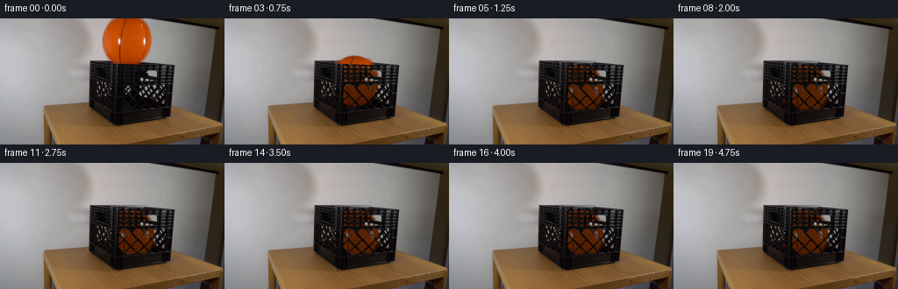
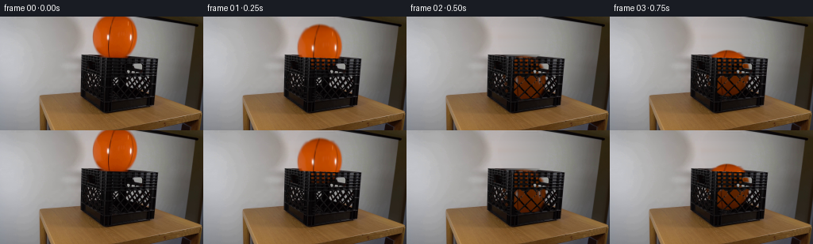
展开代码变化
--- 上一保存版本
+++ 本次保存版本
@@ -41,13 +41,14 @@
# its regular moulded ribs through that stretch.
for yy in range(48,54):
for xx in range(118,174):
- line=47.65+(xx-102)*.053
+ line=47.42+max(0,xx-126)*.074
sx=179+(xx-118)%18
- sy=yy+(sx-xx)*.053
+ source_line=47.42+(sx-126)*.074
+ sy=yy+source_line-line
lo=int(np.floor(sy));f=sy-lo
rim=original[lo,sx]*(1-f)+original[lo+1,sx]*f
# Above the restored edge lies only the illuminated white screen.
- coverage=np.clip((yy-line+.45)/.9,0,1)
+ coverage=np.clip((yy-line+.65)/1.1,0,1)
bg[yy,xx]=wall[min(yy,52),xx]*(1-coverage)+rim*coverage
# Unpremultiply the original photographed surface. It retains the two long
@@ -122,7 +123,7 @@
# Never resample the original outside the few changing pixels.
base_hi=cv2.resize(original,(W*S,H*S),interpolation=cv2.INTER_CUBIC).astype(float)
yh,xh=np.mgrid[0:H*S,0:W*S].astype(float)/S
-front_rim=51.8+(xh-136)*.039
+front_rim=49.2+(xh-136)*.059
wall_occ=np.where(yh<front_rim,1.0,vis)
# Local recovered background is high resolution only where needed.
change=(ell<1.3)&(y<53)
候选 04播放与检查图
可观测工具轨迹
实际执行的命令与返回图片。
命令 1exit 0
/bin/bash -lc 'ls -la && cat prompt.txt && cat GENERATION_RULES.md'
命令 2exit 0
/bin/bash -lc "cat artifact_io.py && python - <<'PY'
from PIL import Image
im=Image.open('first_frame.png');im.resize((1024,576)).save('.tmp/first_large.png')
PY"命令 3exit 0
/bin/bash -lc "python - <<'PY'
import importlib.util
for x in ['numpy','PIL','cv2','scipy']:
print(x, bool(importlib.util.find_spec(x)))
from PIL import Image
im=Image.open('first_frame.png');im.crop((90,0,206,124)).resize((696,744),Image.Resampling.NEAREST).save('.tmp/detail.png')
PY"命令 4exit 0
/bin/bash -lc "python - <<'PY'
from PIL import Image,ImageDraw
im=Image.open('first_frame.png').resize((1024,576)); d=ImageDraw.Draw(im)
for x in range(100,201,5):
d.line((x*4,42*4,x*4,125*4),fill=(255,0,0,128));d.text((x*4,42*4),str(x),fill='white')
for y in range(45,126,5):
d.line((98*4,y*4,202*4,y*4),fill=(255,0,0,128));d.text((98*4,y*4),str(y),fill='white')
im.save('.tmp/grid.png')
PY"命令 5exit 0
/bin/bash -lc "python - <<'PY'
from PIL import Image,ImageDraw
im=Image.open('first_frame.png').crop((135,70,188,110)).resize((795,600),Image.Resampling.NEAREST)
d=ImageDraw.Draw(im)
for x in range(135,189,5):
xx=(x-135)*15;d.line((xx,0,xx,600),fill='#885533');d.text((xx+2,0),str(x),fill='red')
for y in range(70,111,5):
yy=(y-70)*15;d.line((0,yy,795,yy),fill='#885533');d.text((0,yy+2),str(y),fill='red')
im.save('.tmp/lattice.png')
PY"命令 6exit 0
/bin/bash -lc "python - <<'PY'
from PIL import Image
import numpy as np
a=np.array(Image.open('first_frame.png'))
for y in range(0,56,2):
good=(a[y,:,0].astype(int)>a[y,:,1].astype(int)*1.4)&(a[y,:,1].astype(int)>a[y,:,2].astype(int)*1.6)&(a[y,:,0]>100)
ix=np.where(good & (np.arange(256)>108)&(np.arange(256)<180))[0]
if len(ix):print(y,ix.min(),ix.max(),a[y,144].tolist())
PY"命令 7exit 0
/bin/bash -lc "python - <<'PY'
from PIL import Image
import numpy as np
a=np.array(Image.open('first_frame.png'))
for y in (0,10,20,30,40,46,52):
print(y,[(x,a[y,x].tolist()) for x in (80,90,100,110,114,115,174,176,180,190)])
PY"命令 8exit 0
/bin/bash -lc "python - <<'PY'
from PIL import Image
import numpy as np
im=np.array(Image.open('first_frame.png'));print(im[45:55,125:166,0])
PY"命令 9exit 0
/bin/bash -lc "python - <<'PY'
from PIL import Image
im=Image.open('first_frame.png');im.crop((100,48,199,122)).resize((792,592)).save('.tmp/crate.png')
PY"命令 10exit 0
/bin/bash -lc "python - <<'PY'
import numpy as np
from PIL import Image
a=np.array(Image.open('first_frame.png'))
for y in [0,1,2,3,4,46,47,48,49,50,51,52,53]:
print(y,[(x,tuple(a[y,x])) for x in range(115,178,4)])
PY"命令 11exit 0
/bin/bash -lc "python - <<'PY'
from PIL import Image,ImageEnhance,ImageDraw
im=Image.open('first_frame.png').crop((132,72,193,111)); im=ImageEnhance.Brightness(im).enhance(4).resize((854,546),Image.Resampling.NEAREST)
d=ImageDraw.Draw(im)
for x in range(132,194,2):
xx=(x-132)*14;d.text((xx,0),str(x),fill=(255,0,0))
for y in range(72,111,2):
yy=(y-72)*14;d.text((0,yy),str(y),fill=(255,0,0))
im.save('.tmp/bright.png')
PY"命令 12exit 0
/bin/bash -lc "cat > generate.py <<'PY'
from pathlib import Path
import numpy as np
from PIL import Image, ImageDraw, ImageFilter
import cv2
from scipy.ndimage import gaussian_filter
import artifact_io
ROOT=Path(__file__).resolve().parent
S=4
H,W=144,256
original=np.array(Image.open(ROOT/'first_frame.png').convert('RGB'))
rng=np.random.default_rng(31)
y,x=np.mgrid[0:H,0:W].astype(float)
# Recover the small region of the screen that is behind the ball. Its
# illumination is interpolated from the screen on either side, not inpainted
# from the dark rim below it.
wall=original.astype(float).copy()
for yy in range(53):
a=original[yy,110:117].mean(axis=0).astype(float)
b=original[yy,175:182].mean(axis=0).astype(float)
if yy==0: b=np.array([159.,157.,155.])
elif yy==1: b=np.array([158.,156.,154.])
for xx in range(115,175):
u=(xx-113)/65
wall[yy,xx]=a*(1-u)+b*u + np.sin(u*np.pi)*1.5
wall[yy,xx]+=rng.normal(0,.45,3)
# Soft matte derived directly from the orange object and the neutral screen.
CX,CY,RX,RY=144.5,25.1,27.75,28.65
ell=((x-CX)/RX)**2+((y-CY)/RY)**2
alpha=np.clip((wall[:,:,2]-original[:,:,2])/np.maximum(wall[:,:,2],1),0,1)
alpha*= (ell<1.22)&(y<52.3)&(x>113)&(x<176)
alpha=np.where((ell<.78)&(y<49),1,alpha)
# Remove the faint orange antialiasing on the leading edge.
bg=original.astype(float).copy()
region=(ell<1.25)&(y<48.0)
bg[region]=wall[region]
# The back/top rim only loses a short, previously hidden stretch. Continue
# its regular moulded ribs through that stretch.
for yy in range(48,53):
for xx in range(124,166):
line=48.0+(xx-102)*.046
if yy<line-.45:
bg[yy,xx]=wall[yy,xx]
else:
# source intact adjacent rim, following the periodic vertical ribs
sx=xx+35
sy=int(round(yy-35*.046))
sx=min(sx,195);sy=max(48,sy)
bg[yy,xx]=original[sy,sx]
# Unpremultiply the original photographed surface. It retains the two long
# curved dark seams, orange highlights, and the real inflatable texture.
sprite=np.zeros((64,64,4),float)
for sy in range(64):
yy=sy-5
for sx in range(64):
xx=sx+113
q=((xx-CX)/RX)**2+((yy-CY)/RY)**2
aa=np.clip((1.012-np.sqrt(q))*RX/1.1+.5,0,1)
if yy>=0 and yy<52 and 0<=xx<W:
aa=alpha[yy,xx]
if aa>.01:
# Background differs on the final three rows, where the
# crate's top edge, rather than the screen, is behind it.
behind=wall[yy,xx] if yy<48 else bg[yy,xx]
col=(original[yy,xx]-(1-aa)*behind)/aa
if yy>49:
col=.35*col+.65*original[48,xx]
sprite[sy,sx,:3]=np.clip(col,0,255)
else:
z=np.sqrt(max(0,1-q))
red=135+42*z
col=np.array([red,red*.35,0.8])
seamx=143.5-.32*yy
if abs(xx-seamx)<.75:col*=.68
sprite[sy,sx,:3]=col
sprite[sy,sx,3]=aa
# A view-space transparency map for the front wall. A diamond aperture is
# transparent; its raised plastic border is not. The ball is therefore
# occluded by the actual crate instead of being painted onto its exterior.
visim=Image.new('L',(W*S,H*S),0)
d=ImageDraw.Draw(visim)
def poly(points,value=255):d.polygon([(round(a*S),round(b*S)) for a,b in points],fill=value)
# front openwork, with perspective-dependent diamond size
for cy,centers in [(79.6,[141.6,157.5,173.3,188.8]),(87.4,[133.7,149.3,165.1,180.8]),(95.2,[141.0,156.7,172.3,187.8]),(102.4,[148.7,164.2,179.7])]:
for cx in centers:
vy=6.6 if cy<100 else 5.6
vx=6.5
poly([(cx,cy-vy),(cx+vx,cy),(cx-.25,cy+vy),(cx-vx,cy)])
# Only the genuine front face, excluding the corner post and lower rail.
clip=Image.new('L',(W*S,H*S),0)
cd=ImageDraw.Draw(clip)
cd.polygon([(136*S,75*S),(192*S,74*S),(191*S,101*S),(135*S,105*S)],fill=255)
vis=np.minimum(np.array(visim),np.array(clip)).astype(float)/255
# Upper rectangular ventilation cells between the stiffening ribs.
upper=Image.new('L',(W*S,H*S),0);ud=ImageDraw.Draw(upper)
for left,right in [(136.1,139.5),(142.8,146.0),(149.5,153.1),(156.5,159.6),(163.0,166.0),(182.2,185.6),(189.5,192.5)]:
for top,bottom in [(54.3,56.8),(59.4,61.7),(64.4,66.7),(69.6,72.0)]:
offset=(left-136)*.012
ud.polygon([(int(left*S),int((top+offset)*S)),(int(right*S),int((top+offset)*S)),(int(right*S),int((bottom+offset)*S)),(int(left*S),int((bottom+offset)*S))],fill=205)
# The long rectangular hand-hole on the front wall.
ud.polygon([(168*S,60*S),(176*S,60*S),(179*S,61*S),(179*S,66*S),(168*S,65*S),(167*S,62*S)],fill=255)
vis=np.maximum(vis,np.array(upper)/255)
vis=gaussian_filter(vis,.85)
# Bright patches inside the front mesh are unobstructed apertures in the
# photographed setup; preserve the shape of their edges precisely.
lum=original.mean(axis=2)
actual=np.clip((lum-48)/37,0,1)
actual*=((x>=138)&(x<=190)&(y>=76)&(y<=99))
vis=np.maximum(vis,cv2.resize(actual,(W*S,H*S),interpolation=cv2.INTER_LINEAR)*.95)
# Side-wall is angled away: a handful of its small apertures can reveal the
# extreme left of the ball, with much less transmitted light.
side=Image.new('L',(W*S,H*S),0);sd=ImageDraw.Draw(side)
for centerx,centery in [(123,76),(119,81),(125,85),(120,90),(126,94)]:
sd.polygon([((centerx)*S,(centery-3)*S),((centerx+2.3)*S,centery*S),(centerx*S,(centery+3)*S),((centerx-2.3)*S,centery*S)],fill=120)
vis=np.maximum(vis,np.array(side)/255)
BG=cv2.resize(np.clip(bg,0,255).astype(np.uint8),(W*S,H*S),interpolation=cv2.INTER_CUBIC).astype(float)
# Never resample the original outside the few changing pixels.
base_hi=cv2.resize(original,(W*S,H*S),interpolation=cv2.INTER_CUBIC).astype(float)
yh,xh=np.mgrid[0:H*S,0:W*S].astype(float)/S
front_rim=51.8+(xh-136)*.039
wall_occ=np.where(yh<front_rim,1.0,vis)
# Local recovered background is high resolution only where needed.
change=(ell<1.3)&(y<53)
change_hi=cv2.resize(change.astype(float),(W*S,H*S),interpolation=cv2.INTER_LINEAR)
base=base_hi*(1-change_hi[:,:,None])+BG*change_hi[:,:,None]
texture=cv2.resize(sprite[:,:,:3].astype(np.float32),(64*S,64*S),interpolation=cv2.INTER_CUBIC)
matte=cv2.resize(sprite[:,:,3].astype(np.float32),(64*S,64*S),interpolation=cv2.INTER_LINEAR)
# Analytic gravity and diminishing, inelastic bounces on the crate bottom.
G=435.; floor_y=81.5; e=.43
falltime=np.sqrt(2*(floor_y-CY)/G)
impact_speed=G*falltime
def motion(t):
if t<falltime:
return CY+.5*G*t*t,0.,G*t
tt=t-falltime; v=impact_speed*e
for _ in range(12):
period=2*v/G
if tt<period:
dy=-v*tt+.5*G*tt*tt
compression=0.
return floor_y+dy,compression,-v+G*tt
tt-=period;v*=e
if v<2:break
return floor_y,0.,0.
def render(t):
cy,compression,velocity=motion(t)
# A tiny sideways settling motion, not a lateral launch.
cx=CX+3.7*(1-np.exp(-2.8*t))
# Slow incidental rotation, about the viewing axis, while falling.
angle=3.1*(1-np.exp(-3*t))
M=cv2.getRotationMatrix2D(((CX-113)*S,(CY+5)*S),angle,1.)
M[0,2]+=(cx-113)*S-(CX-113)*S+113*S
M[1,2]+=(cy+5)*S-(CY+5)*S-5*S
tex=cv2.warpAffine(texture,M,(W*S,H*S),flags=cv2.INTER_CUBIC,borderMode=cv2.BORDER_CONSTANT)
a=cv2.warpAffine(matte,M,(W*S,H*S),flags=cv2.INTER_LINEAR,borderMode=cv2.BORDER_CONSTANT)
# Light is restricted progressively when the ball is down in the crate.
inside=np.clip((yh-front_rim)/13,0,1)
shade=1-.45*inside
shade*=1-.08*np.clip((cy-60)/22,0,1)*inside
tex=tex*shade[:,:,None]
a=np.clip(a,0,1)*wall_occ
out=base.copy()
out=out*(1-a[:,:,None])+tex*a[:,:,None]
# Convert only the modified area back to output pixels so the locked
# camera, wooden table, crate ribs, and screen texture remain unchanged.
small=cv2.resize(out,(W,H),interpolation=cv2.INTER_AREA)
modified=cv2.resize(np.maximum(change_hi,a),(W,H),interpolation=cv2.INTER_AREA)>.002
result=original.copy();result[modified]=np.clip(small[modified],0,255).astype(np.uint8)
return result
frames=[original.copy()]
for i in range(1,20):
# Short, physical shutter: motion blur is greatest during free fall.
t=i/4
samples=[render(t+dt) for dt in [-.009,0,.009]]
frames.append(np.clip(np.mean(samples,axis=0),0,255).astype(np.uint8))
frames=np.stack(frames).astype(np.uint8)
artifact_io.save(frames,ROOT)
Image.fromarray((vis*255).astype(np.uint8)).resize((W,H)).save(ROOT/'.tmp/visibility.png')
Image.fromarray(np.clip(bg,0,255).astype(np.uint8)).save(ROOT/'.tmp/background.png')
Image.fromarray(np.clip(sprite,0,255).astype(np.uint8)[:,:,:3]).resize((384,384)).save(ROOT/'.tmp/sprite.png')
PY
python generate.py"命令 13exit 0
/bin/bash -lc "python - <<'PY'
from PIL import Image
for i in [1,2,3,5]:
im=Image.open(f'frames/{i:02}.png');im.resize((1024,576)).save(f'.tmp/frame{i}.png')
PY"命令 14exit 0
/bin/bash -lc "python - <<'PY'
import numpy as np
from PIL import Image
im=np.array(Image.open('first_frame.png')).astype(float)
v=np.array(Image.open('.tmp/visibility.png')).astype(float)/255
im[:,:,0]=im[:,:,0]+100*v;im[:,:,1]*=(1-.5*v);im[:,:,2]*=(1-.5*v)
Image.fromarray(np.clip(im,0,255).astype('uint8')).crop((132,72,193,111)).resize((854,546)).save('.tmp/overlay.png')
PY"命令 15exit 0
/bin/bash -lc "python - <<'PY'
p='generate.py'
s=open(p).read()
a=s.index('for yy in range(48,53):')
b=s.index('\\n# Unpremultiply',a)
s=s[:a]+'''for yy in range(48,54):
for xx in range(118,174):
line=47.65+(xx-102)*.053
sx=179+(xx-118)%18
sy=yy+(sx-xx)*.053
lo=int(np.floor(sy));f=sy-lo
rim=original[lo,sx]*(1-f)+original[lo+1,sx]*f
# Above the restored edge lies only the illuminated white screen.
coverage=np.clip((yy-line+.45)/.9,0,1)
bg[yy,xx]=wall[min(yy,52),xx]*(1-coverage)+rim*coverage
''' +s[b:]
s=s.replace(\"actual=np.clip((lum-48)/37,0,1)\",\"actual=np.clip((lum-30)/27,0,1)\")
s=s.replace(\"interpolation=cv2.INTER_LINEAR)*.95)\",\"interpolation=cv2.INTER_LINEAR))\")
s=s.replace(\"shade=1-.45*inside\", \"shade=1-.51*inside\")
open(p,'w').write(s)
PY
python generate.py
python - <<'PY'
from PIL import Image
Image.open('frames/05.png').resize((1024,576)).save('.tmp/final5.png')
PY"命令 16exit 0
/bin/bash -lc "python - <<'PY'
from PIL import Image
import numpy as np
a=np.array(Image.open('first_frame.png'))
for x in [102,110,118,165,170,175,179,182,188,195]:
print(x,[(y,a[y,x].tolist()) for y in range(47,55)])
PY"命令 17exit 0
/bin/bash -lc "python - <<'PY'
p='generate.py';s=open(p).read();s=s.replace(\"line=47.65+(xx-102)*.053\", \"line=47.42+max(0,xx-126)*.074\")
s=s.replace(\"sy=yy+(sx-xx)*.053\", \"source_line=47.42+(sx-126)*.074\\n sy=yy+source_line-line\")
s=s.replace(\"coverage=np.clip((yy-line+.45)/.9,0,1)\",\"coverage=np.clip((yy-line+.65)/1.1,0,1)\")
s=s.replace(\"front_rim=51.8+(xh-136)*.039\", \"front_rim=49.2+(xh-136)*.059\")
open(p,'w').write(s)
PY
python generate.py
python - <<'PY'
import numpy as np
from PIL import Image
import artifact_io
fr=np.stack([np.array(Image.open(f'frames/{i:02}.png')) for i in range(20)])
assert fr.shape==(20,144,256,3)
assert np.array_equal(fr[0],np.array(Image.open('first_frame.png')))
print('Verified',fr.shape,fr.dtype,'first frame identical')
Image.open('frames/05.png').resize((1024,576)).save('.tmp/final5.png')
PY"视觉工具实际返回图片 1
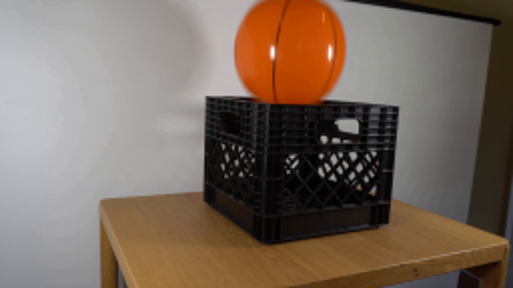
视觉工具实际返回图片 2
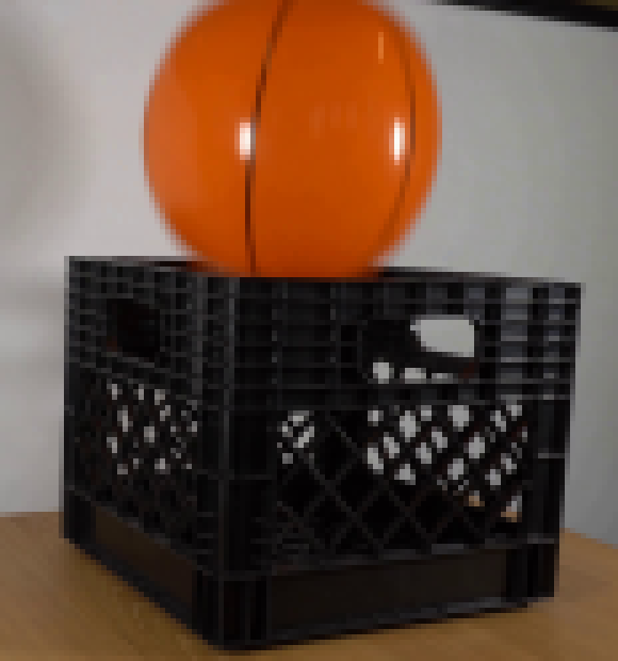
视觉工具实际返回图片 3
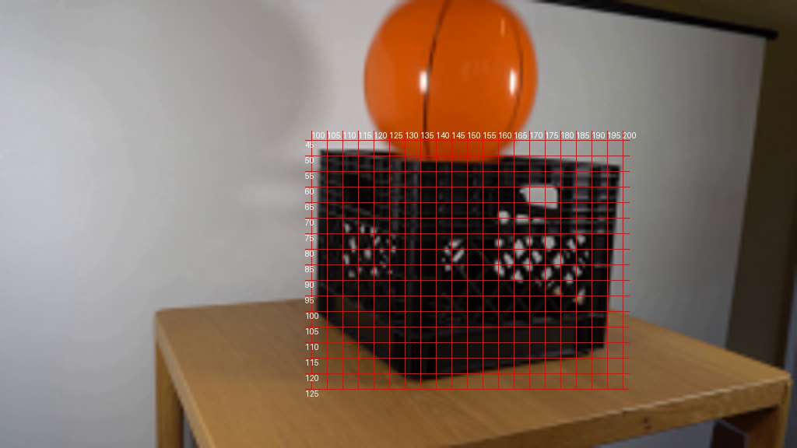
视觉工具实际返回图片 4
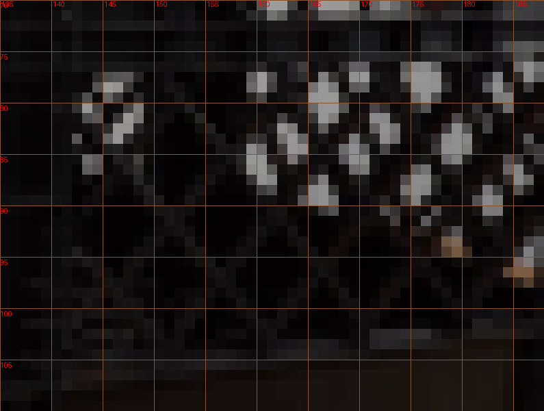
视觉工具实际返回图片 5
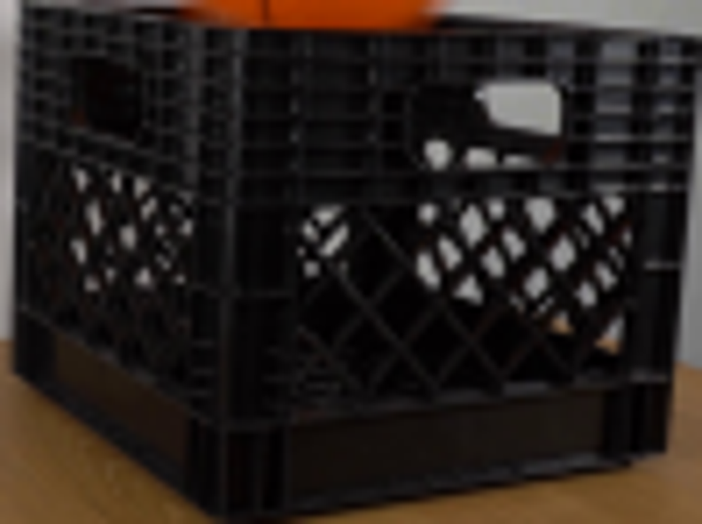
视觉工具实际返回图片 6
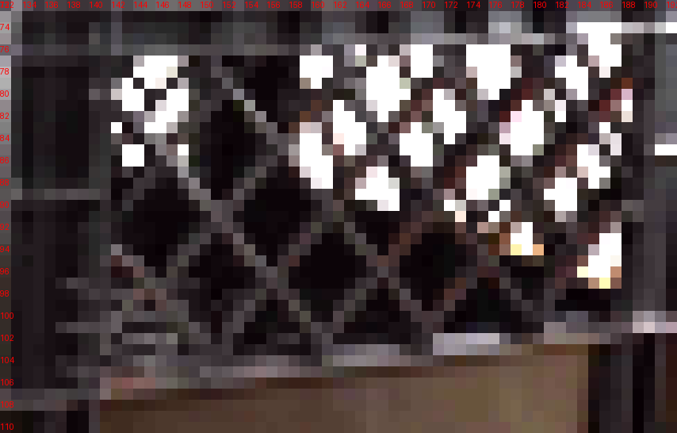
视觉工具实际返回图片 7
视觉工具实际返回图片 8
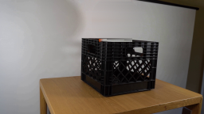
视觉工具实际返回图片 9

视觉工具实际返回图片 10
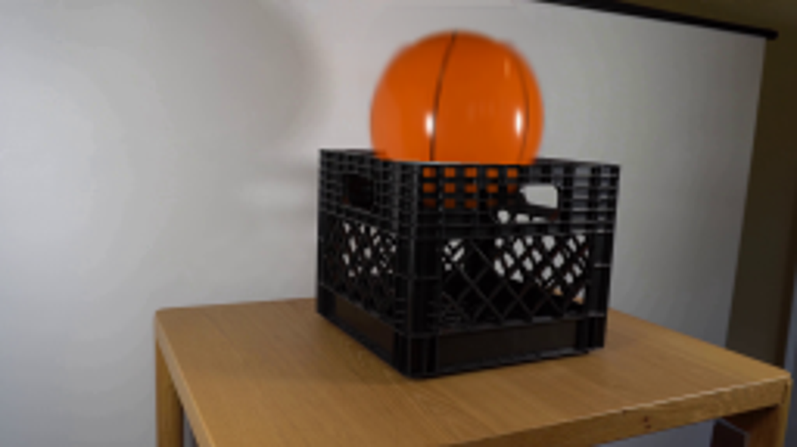
视觉工具实际返回图片 11
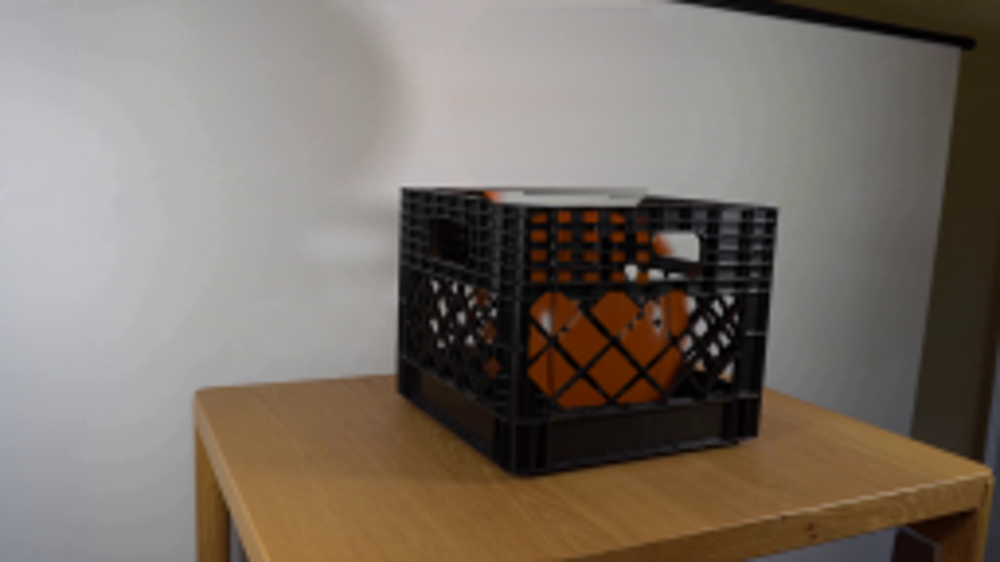
视觉工具实际返回图片 12
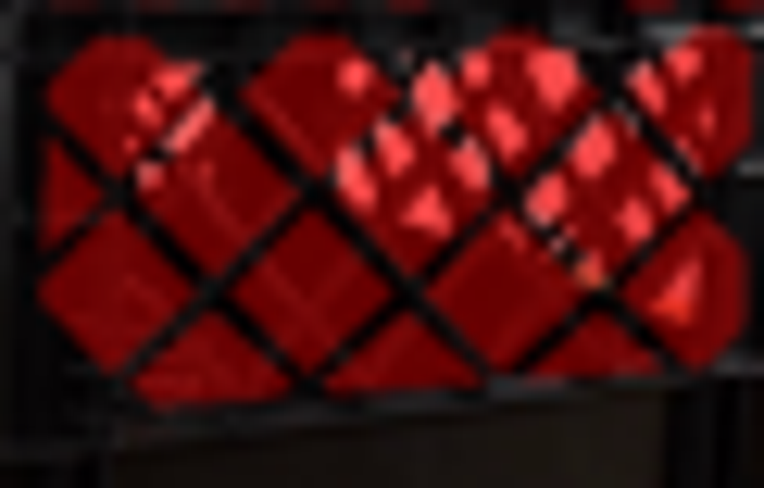
视觉工具实际返回图片 13
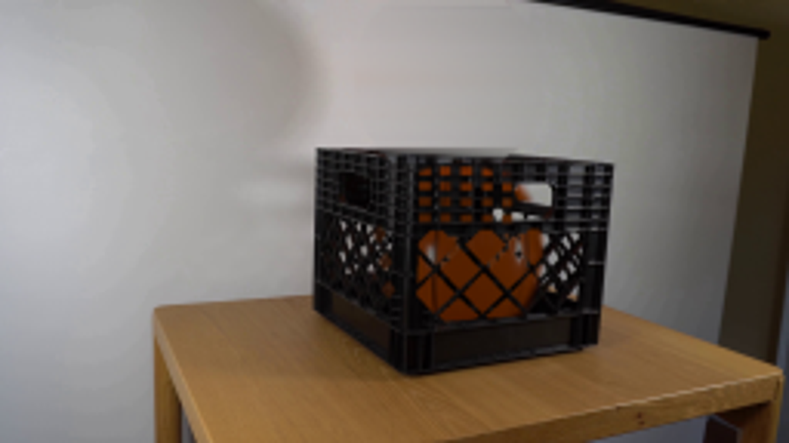
视觉工具实际返回图片 14
保存候选 4 份；完成命令 17 次；可验证图片返回 14 张。原始 API 响应与完整日志保留在本地。